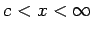

Eine Reihe mit dem allgemeinen Glied an =f(n) ist konvergent, wenn f(x) eine monoton fallende Funktion ist und das uneigentliche Integral
(7.30)
konvergiert.
2. Divergenz:
Eine Reihe mit dem allgemeinen Glied an =f(n) ist divergent, wenn das voranstehende Integral divergiert.
Die untere Integrationsgrenze c ist zwar beliebig, sie ist jedoch so zu wählen, daß die Funktion f(x) für  definiert und frei von Unstetigkeiten ist.